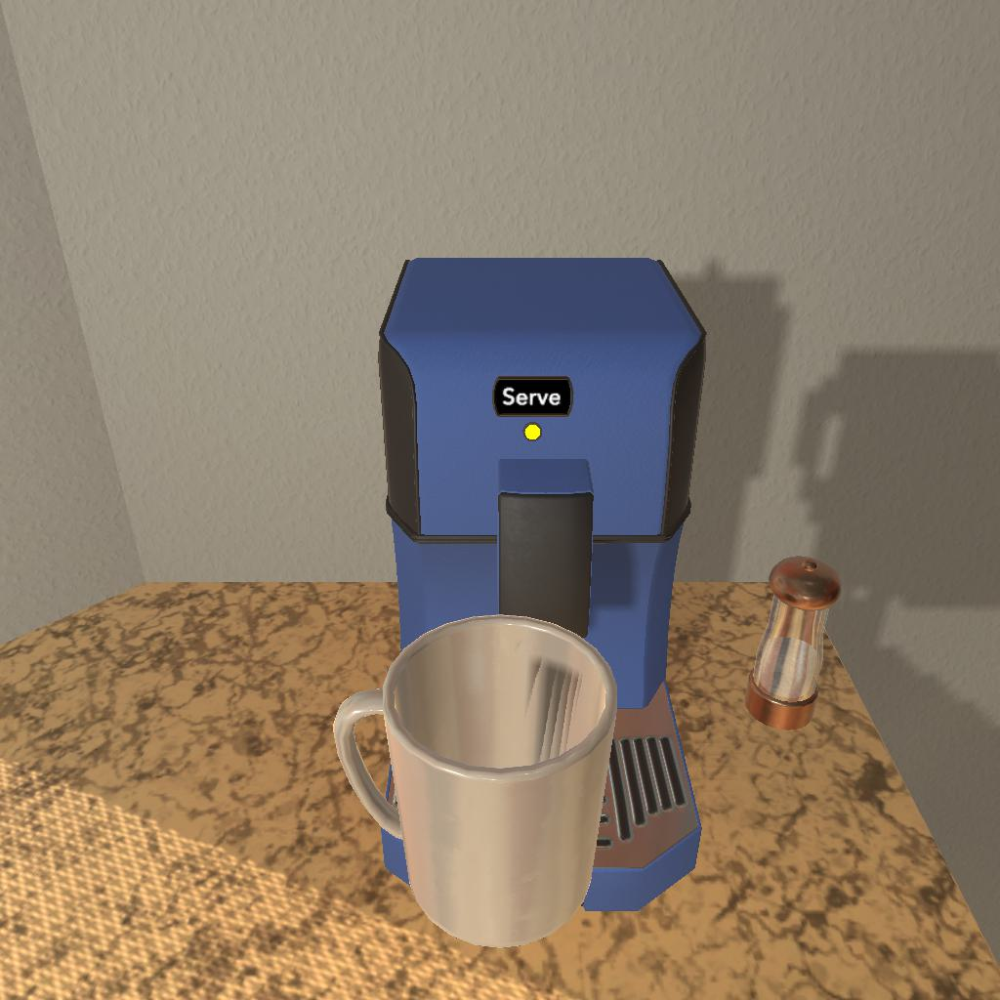

---------------------------------------------------------task: 15---------------------------------------------------------
--------------------------------------------------------------------------------------------------------------------------------------------------------------------
--------------------------------------------------------------------------------------------------------------------------------------------------------------------
Step:--------------------------------------------------------------------------14-------------------------------------------------------------------------------
----------------------------------------
VLM Prompt:
Image1:
Image2:
**Instruction**
1. Analyze the provided images to identify all visible household objects and compare the difference between images (e.h. whether the object is opened or not and taken on hand or not), focusing on those relevant to the task description "cool some mug and put it in coffeemachine."
2. Use the analysis of images and the task hint "The agent must find an object of the desired type, pick it up, go to a fridge, cool the object with the fridge, then find the correct location to place it, and put it down there. The agent does not need to use the fridge button or open the fridge to cool the object, and the agent just needs to do action that is "cool the object with the fridge"." to answer the question: what is the most reasonable action in the choices for the task description "cool some mug and put it in coffeemachine"?
3. Decide and write the answer using the template: The answer is: (i): , where i is the real number. If there is no desired object in images, search every place based on **Initial Observation** to find the object. And if no one is exactly correct, choose a similar answer.
**Initial Observation**
You are in the middle of a room. Looking quickly around you, you can see cabinet (1-15), fridge (1), countertop (1-4), drawer (1-4), microwave (1), toaster (1), coffeemachine (1), garbagecan (1), sink (1), stoveburner (1-3), sinkbasin (1)
**Answer Choices**
(1): go to cabinet 1
(2): go to cabinet 2
(3): go to cabinet 3
(4): go to fridge 1
(5): go to countertop 1
(6): go to cabinet 4
(7): go to cabinet 5
(8): go to cabinet 6
(9): go to cabinet 7
(10): go to drawer 1
(11): go to drawer 2
(12): go to cabinet 8
(13): go to drawer 3
(14): go to cabinet 9
(15): go to cabinet 10
(16): go to drawer 4
(17): go to microwave 1
(18): go to cabinet 11
(19): go to toaster 1
(20): go to cabinet 12
(21): go to cabinet 13
(22): go to cabinet 14
(23): go to cabinet 15
(24): go to countertop 2
(25): go to garbagecan 1
(26): go to countertop 3
(27): go to countertop 4
(28): go to sink 1
(29): go to stoveburner 1
(30): go to stoveburner 2
(31): go to stoveburner 3
(32): go to sinkbasin 1
(33): put mug 1 in/on coffeemachine 1
(34): examine mug 1
(35): examine coffeemachine 1
**Answer**
Let's think step by step by following the instructions.
----------------------------------------
----------------------------------------
Original Response:
First, we analyze the provided images to identify all visible household objects relevant to the task description "cool some mug and put it in coffeemachine." In both Image1 and Image2, we can see a coffeemachine and a mug. In Image1, the mug is placed in the coffeemachine, while in Image2, the mug is placed on the countertop next to the coffeemachine.
The task hint suggests that the agent must find a mug, pick it up, go to a fridge, cool the object with the fridge, then find the correct location to place it, and put it down there. The agent does not need to use the fridge button or open the fridge to cool the object, and the agent just needs to do an action that is "cool the object with the fridge."
Given this information, the most reasonable action for the task description "cool some mug and put it in coffeemachine" is to first pick up the mug from the countertop, cool it with the fridge, and then put it in the coffeemachine. Since the mug is already visible on the countertop in Image2, the agent does not need to search for it in cabinets or drawers.
Therefore, the answer is: (4): go to fridge 1 to cool the mug, and then (33): put mug 1 in/on coffeemachine 1 to complete the task.
----------------------------------------
----------------------------------------
>>> Refine Original VLM Response and Get Pure Action: No action
----------------------------------------
-----------------------------------------------------------------
Running time: 12.284629583358765 seconds
Total Money: 7.196680000000005
-----------------------------------------------------------------
-----------------------------------------------------------------
Text Observation:Nothing happens.
-----------------------------------------------------------------
UNSUCCEED